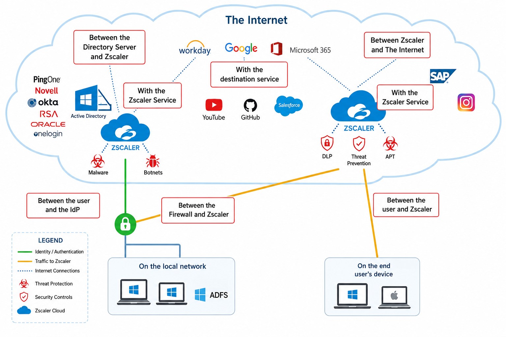
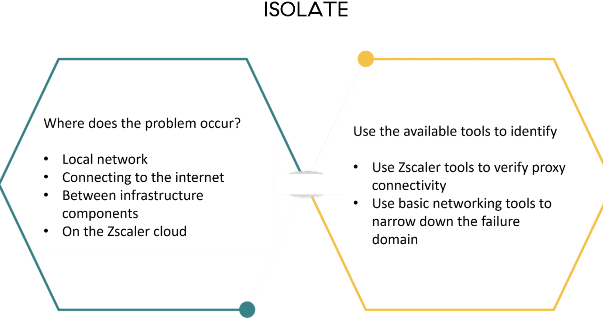
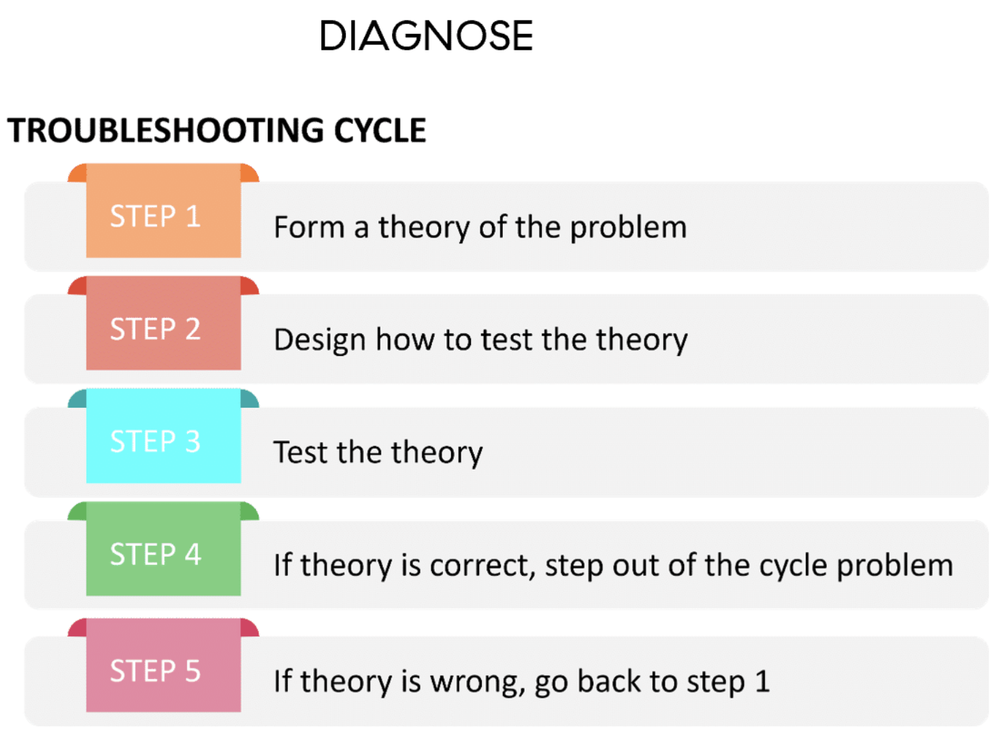
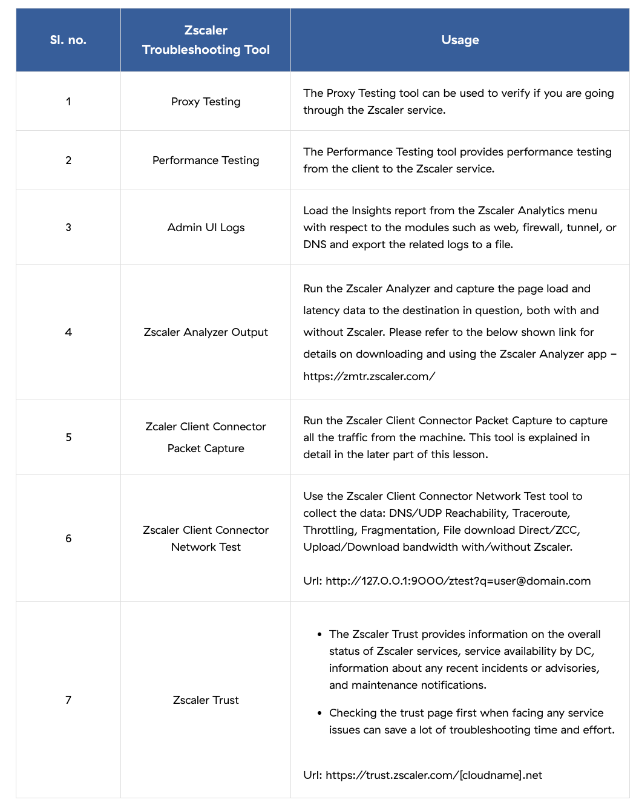
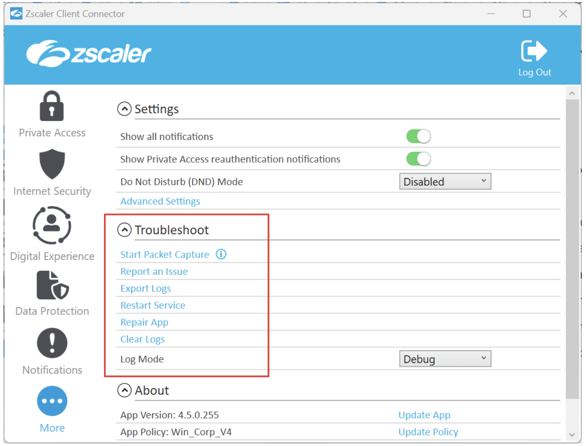

The flow, the failure regions, and the tools that support each phase
"Tools find symptoms. A process finds causes — and the process is always Locate, Isolate, Diagnose."
💭THINK FIRST · WHERE PROBLEMS LIVE
A Zscaler request passes through up to seven distinct regions — the user's device, the local network, the firewall, the IdP, the user-to-Zscaler link, the Zscaler service itself, and the destination. Most tickets fail on the wrong assumption that the issue is "in Zscaler" when it's actually one hop earlier.
Why does the troubleshooting flow start with "where" before "why"?
What's the cost of trying to diagnose a problem you haven't yet localized?
Q1 — MODEL ANSWER
Because "why" depends on "where". The same symptom — a hung page load — can be caused by a local firewall blocking 443, a SAML failure at the IdP, or a blacklisted destination IP. Each cause lives in a different region, and each region has different diagnostic tools. Localize narrows the search space before you spend time on root-cause theories.
Q2 — MODEL ANSWER
You waste time on the wrong tools, and worse, you can mask the real fault with a "fix" that just changes the symptom. A reboot that clears the issue temporarily isn't a diagnosis — it's noise. Without localize and isolate, you can't tell whether your fix actually addressed the cause or just papered over it.
SECTION 1
The Troubleshooting Process
Zscaler's troubleshooting methodology is a three-phase loop — Localize → Isolate → Diagnose — that applies uniformly to every Internet Access (ZIA) and Private Access (ZPA) issue. Each phase has a specific question to answer, and the answer is the entry condition for the next phase.
PHASE 1
Localize
Identify where in the path the fault occurred and who is affected.
PHASE 2
Isolate
Narrow precisely which logical process is failing inside that region.
PHASE 3
Diagnose
Form a theory, test it, iterate. Confirm the fix or refine the theory.

Every Internet Access request traverses up to seven distinct regions. The Localize phase decides which region owns the fault before any deep diagnostics begin.
🧠
MENTAL NOTE
Three phases, in order: Localize (where + who), Isolate (which process), Diagnose (theory + test). Seven possible fault regions for ZIA: device, local network, firewall, user-to-Zscaler, user-to-IdP, IdP-to-Zscaler, Zscaler-to-Internet/destination. Phase order is non-negotiable — you cannot diagnose what you have not isolated.
ASK A QUESTION
ADD A NOTE
💭THINK FIRST · LOCALIZE
"Who is affected?" sounds obvious but is the highest-signal question in troubleshooting. One user means client; one location means network; all users means a service-side or DC issue.
If only road-warrior users hit the issue, which fault regions remain plausible and which can you eliminate?
Q1 — MODEL ANSWER
Road-warriors don't traverse the corporate firewall or company LAN, so those regions are eliminated. The remaining candidates are: the user's device (ZCC version, OS firewall, AV), the user-to-Zscaler link (the user's home/coffee-shop network), the IdP from the road-warrior's location, and the Zscaler service itself. If the issue is also reproducible from a company laptop in-office, you can further eliminate the device and network from the suspect list.
SECTION 2
Localize — Where and Who
Localize answers two questions: who is affected? and capture maximum data from those users. The "who" defines the scope; the data defines the working set for the next phase.
Who is affected?
Single user / single computer
Multiple users / multiple computers
Road-warrior users (off-network only)
Users at one or more specific company locations
What data do you capture?
Exact error string, screenshot, timestamp, and user/host details
Scope of the problem (one site? one app? one user-group?)
Localize is two parallel asks: scope ("who") and evidence ("what data"). Together they shrink the candidate fault regions before Isolate begins.
🧠
MENTAL NOTE
Localize asks two things — Who (single user, multi-user, road-warrior, location-specific) and What data (error text, scope, recent changes). The "who" alone often eliminates 4–5 of the 7 possible ZIA fault regions before Isolate begins.
ASK A QUESTION
ADD A NOTE
💭THINK FIRST · ISOLATE
Isolate is the bridge between "where" and "why". You've named the region; now you have to choose between three classes of failure: connectivity, infrastructure-to-infrastructure communication, or misconfiguration.
Why does the same evidence (a TCP RST) belong to different fault classes depending on which side issued it?
How would you tell a "general network connectivity" issue apart from a "misconfigured Zscaler policy" if both block traffic to one website?
Q1 — MODEL ANSWER
A TCP RST from the client is usually an OS-level firewall or application aborting; from a middlebox it's a transparent proxy refusing the flow; from the server it's an application-layer rejection. Same packet, three different fault classes. Reading the source tells you which side owns the failure.
Q2 — MODEL ANSWER
Test the site from off-Zscaler. If it loads without Zscaler in the path but fails through Zscaler, the network connectivity is fine and the fault is a Zscaler policy match (URL filtering, DLP, sandbox). If it fails everywhere, network or destination is the cause. Reproducing with and without Zscaler is the single fastest isolation step.
SECTION 3
Isolate — Which Process Is Failing
Once you've localized the fault to a region, Isolate narrows further by answering three diagnostic questions:
Are there network connectivity problems in general (RST, timeouts, DNS)?
Is there a connection issue between specific infrastructure entities (ZCC to gateway, IdP to Zscaler)?
Is there a misconfiguration — of network connections or of a Zscaler policy?

Isolate splits the question "where" into two perspectives: failure domain (network vs Zscaler vs destination) and tool selection (Zscaler proxy tests vs basic ping/traceroute).
i
FAST ISOLATION TIP
If the symptom reproduces only through Zscaler but not direct-to-internet, the issue is Zscaler-side (policy, edge, IdP). If it reproduces both ways, the network or destination is in play. This single test eliminates half of the suspect space.
🧠
MENTAL NOTE
Isolate splits failures into three classes — general network connectivity, infrastructure-to-infrastructure connection, misconfiguration. Use Zscaler proxy tests for proxy connectivity and ping/traceroute/MTR/PCAP for basic network. Through-Zscaler vs without-Zscaler reproduction is the fastest isolation test.
ASK A QUESTION
ADD A NOTE
💭THINK FIRST · DIAGNOSE
Diagnose is a five-step iteration: form theory, design test, run test, decide, loop. The discipline is in step 4 — being honest about whether the test confirmed the theory or disproved it.
Why is "reverse any changes" part of the diagnose cycle?
Q1 — MODEL ANSWER
Because partial changes accumulate state that confuses the next test. If you change a policy and the issue persists, leaving that change in place means the next theory is being tested in a non-baseline environment — you can no longer tell which change had which effect. Reverse failed changes before testing the next theory.
SECTION 4
Diagnose — Theory, Test, Iterate
Diagnose is a constructive cycle that leverages knowledge and experience to form a theory, then tests it cleanly:
STEP 1
Form a theory
Use the Localize and Isolate evidence to hypothesise the cause.
STEP 2
Design the test
Decide what change would fix the issue if the theory is right.
STEP 3
Test
Apply the change in a controlled way. Reproduce the symptom.
STEP 4
If correct → done
Document the fix and step out of the loop.
STEP 5
If wrong → reverse and re-theorize
Undo the change, learn from the result, form a new theory.

The Diagnose cycle. Each iteration must either confirm and exit, or revert and re-theorize — leaving partial changes in place compounds noise into the next loop.
🧠
MENTAL NOTE
Diagnose = 5 steps: theory → design test → test → correct (exit) → wrong (revert + back to step 1). Always reverse changes that didn't work — partial changes pollute the baseline and break the next test.
ASK A QUESTION
ADD A NOTE
💭THINK FIRST · CHOOSING THE RIGHT TOOL
Zscaler offers a small set of purpose-built tools — Proxy Test, Performance Test, Admin UI logs, ZCC Packet Capture, ZCC Network Test, Zscaler Analyzer, Zscaler Trust. The trick isn't knowing they exist; it's matching each one to the phase it actually helps with.
Why is Zscaler Trust (trust.zscaler.com) the first stop, not the last, when "everything is broken"?
When would you use ZCC Network Test instead of a packet capture, and vice versa?
Q1 — MODEL ANSWER
Trust gives you the cloud-wide status of the Zscaler service before you waste time chasing a client-side ghost. If there's a known incident on your cloud or your DC, half the user-reported symptoms are already explained. Check Trust first when scope is broad; check it last when scope is one user.
Q2 — MODEL ANSWER
ZCC Network Test is fast, structured and good for first-pass evidence — it pings DNS/UDP reachability, throughput, fragmentation, latency to a fixed Zscaler endpoint. A packet capture is heavier but mandatory when you need to see actual headers, response codes, retransmissions, MTU behaviour, or who issued the RST. Network Test first; PCAP when Network Test isn't specific enough.
SECTION 5
Troubleshooting Tools
To pinpoint root cause, leverage Zscaler's purpose-built tools. They split into web-based (Admin UI), client-based (ZCC), and external (Trust, Analyzer).

The full tool list. Proxy/Performance Test live in the Admin UI; packet capture and network test live in ZCC; Analyzer is downloadable; Trust is a public web portal.
PROXY TEST
Proxy Testing
Verifies you are connecting through the Zscaler service. Run from Admin UI.
PERF TEST
Performance Testing
Performance telemetry to/from the Zscaler service.
ADMIN UI LOGS
Admin UI Logs
Web Insights, firewall, DNS — searchable view of recent traffic and policy decisions.
ZS ANALYZER
Zscaler Analyzer Output
Page-load and latency analysis without Zscaler in the path. Download from zscaler.com.
ZCC PCAP
ZCC Packet Capture
In-product PCAP from the Zscaler Client Connector. Started from the Troubleshoot panel.
Public status portal — service health, recent incidents, maintenance windows. URL: trust.zscaler.com.
Enabling the ZCC Troubleshoot panel
ZCC ships with the Troubleshoot panel under the More tab, exposing Start Packet Capture, Report an Issue, Export Logs, Restart Service, Repair App, Clear Logs, and Log Mode. Admins enable or disable these per-user from the Client Connector Portal: Administration → Client Connector Support → App Supportability.

The ZCC Troubleshoot panel — every tool a user can invoke locally. Admins enable/disable each from App Supportability in the ZCC portal.
🧠
MENTAL NOTE
7 core tools: Proxy Test, Performance Test, Admin UI Logs, Zscaler Analyzer (zscaler.com), ZCC Packet Capture, ZCC Network Test (127.0.0.1:9000/test?q=user@domain), Zscaler Trust (trust.zscaler.com). ZCC tool visibility is controlled from Administration → Client Connector Support → App Supportability.